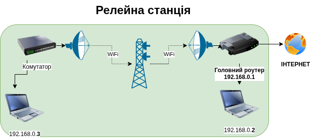
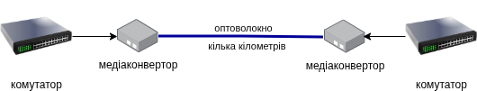

Коли два абонента не можуть звʼязатися напряму через обмеження по відстані або через перешкоди, їм потрібен посередник, який прийматиме сигнал та передаватиме далі, який називається ретранслятор (retranslator — перепередавач). Також використовують терміни релей (relay — пересилач) або репітер (repeater — повторювач), а місце, де встановлені два репітери чи релеї — ретрансляційна або релейна станція.

Є два види ретрансляторів:
аналогові працють на першому рівні мережі (L1), вони просто підсилють та передають далі сигнал. Вони вносять мінімальні затримки при передачі, але чутливі до завад (підсилюють і завади також).
цифрові працюють на другому рівні мережі (L2), вони приймають пакет і пересилають пакет далі.
Ретранслятори використовують для розширення покритя мережі. Наприклад по мережі Ethernet сигнал можна передати приблизно на 100 метрів на швидкості 1 Гбіт. Якщо потрібна зʼєднати мережі на відстані понад 100 метрів, то потрібно ставити ретранслятори.
Наприклад, часто використовують маленький комутатор (чи маршрутизатор в режимі моста) як ретранслятор для розширення мережі Ethernet, але на комутаторі будуть незадіяні порти, через які можна непомітно підключитися до мережі, і до того ж, маленькі комутатори не розраховані на зʼєднання двох великих мереж між собою, тому можуть глючити або сповільнюватися коли їхня памʼять переповнюється.
Для великих відстаней значно дешевше використати медіаконвертори (media converter) з оптоволокном, або точки доступу WiFi], якщо є пряма видімість між точками, або точки доступу WiFi з додатковими радіорелейними станціями по дорозі між ними.

Для радіозвʼязку, ретранслятори ставлять на вишки, на супутники, або використовують радіорелеї, які підʼєднані і до радіо-мережі і до Інтернету, так звані айпі-сайти (IP site), що дозволяє використовувати наявну мережу Інтернет для розширення радіомережі, а не будувати свою власну.